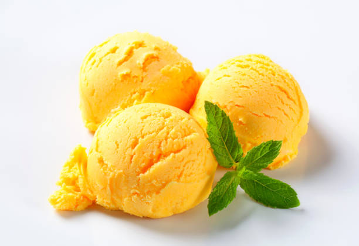

Mango Sorbet

Description
This dreamy mango sorbet is a deliciously refreshing
dessert to make with fresh ripe mangos to cool off on
hot summer days. Hope you enjoy this as much as my
family does!
From Allrecipes, uploaded by Cindy Chaney
Ingredients
- 4 mangos - peeled, seeded, and cubed
- 1 cup simple syrup or to taste
- 3 tablespoons fresh lime juice
Steps
-
Place cubed mango into a food processor; blend
until smooth.
-
Pour in simple syrup and lime juice to taste;
process until smooth.
-
Transfer mango mixture into an ice cream maker
and freeze according to manufacturer's instructions,
about 20 minutes.
Home